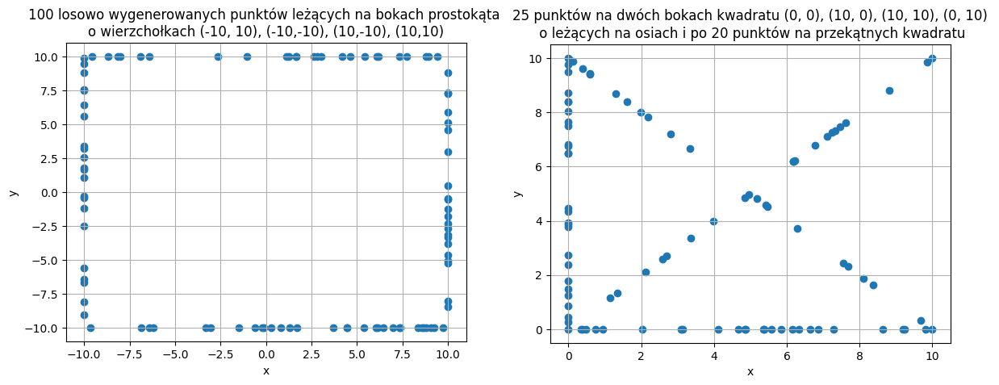
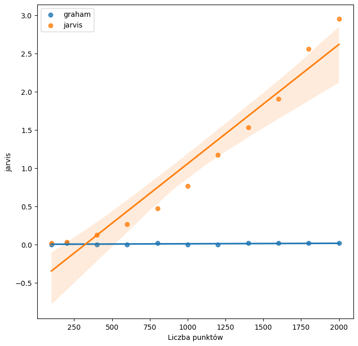
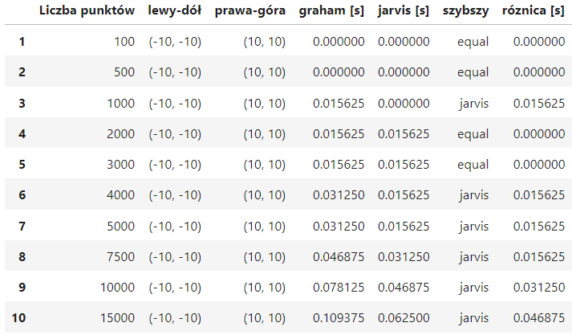
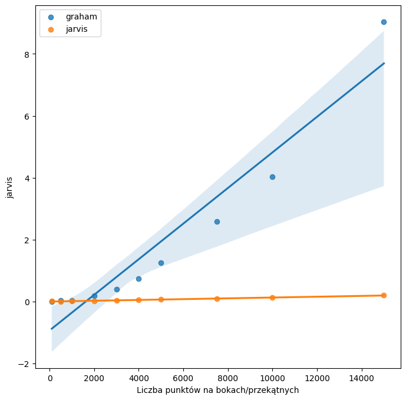

Ćwiczenie wprowadzające w zagadnienia otoczki wypukłej – implementacja algorytmów Grahama oraz Jarvisa wyznaczające otoczkę wypukłą dla zadanych zbiorów, przeprowadzenie testów, wizualizacja i opracowanie wyników.
1.2 Program ćwiczenia
Przygotuj program generujący następujące zbiory punktów na płaszczyźnie (współrzędne rzeczywiste typu double):
a) zawierający 100 losowo wygenerowanych punktów o współrzędnych z przedziału [-100, 100]
b) zawierający 100 losowo wygenerowanych punktów leżących na okręgu o środku (0,0) i promieniu R=10
c) zawierający 100 losowo wygenerowanych punktów leżących na bokach prostokąta o wierzchołkach (-10, 10), (-10,-10), (10,-10), (10,10)
d) zawierający wierzchołki kwadratu (0, 0), (10, 0), (10, 10), (0, 10) oraz punkty wygenerowane losowo w sposób następujący: po 25 punktów na dwóch bokach kwadratu leżących na osiach i po 20 punktów na przekątnych kwadratu
Zmodyfikuj program z punktu 1 tak, aby możliwe było zadawanie określonych parametrów dla schematów losowania punktów podanych powyżej:
a) liczba punktów, przedziały dla współrzędnych
b) liczba punktów, środek i promień okręgu
c) liczba punktów, wierzchołki prostokąta
d) wierzchołki kwadratu, liczba punktów na osiach, liczba punktów na przekątnych
Zaimplementuj algorytmy Grahama oraz Jarvisa wyznaczające otoczkę wypukłą dla zadanego zbioru punktów. Przetestuj program na zbiorach z punktu 1 oraz zmodyfikowanych zbiorach z punktu 3. Program powinien pozwolić na zapisanie w pliku wyniku działania algorytmu, czyli ciągu wierzchołków otoczki. Dodaj możliwość sprawdzenia czasu działania algorytmu. Uruchom aplikację graficzną tak, aby można było zilustrować graficznie poszczególne kroki realizacji algorytmu. Jednym kolorem powinny być zaznaczone wszystkie punkty zbioru wyjściowego, drugim kolorem boki aktualnie rozpatrywane, a trzecim boki wielokąta otoczki. Po zakończeniu wyznaczania otoczki wierzchołki otoczki powinny być wyróżnione (osobnym kolorem bądź kształtem).
W sprawozdaniu napisz, czy Twój program działał poprawnie dla wszystkich zbiorów danych oraz opisz krótko wnioski dotyczące działania algorytmu dla poszczególnych zbiorów. Napisz, dlaczego wg Ciebie zaproponowano takie zbiory punktów? Które ze zbiorów mogły stwarzać problemy w działaniu algorytmów? Jeśli tak, to jakie i dlaczego? Porównaj czasy działania obu algorytmów w zależności od liczby punktów w poszczególnych zbiorach (a, b, c, d). Dołącz wybrane, istotne ilustracje.
2 Wykorzystane narzędzia
2.1 Środowisko
Ćwiczenie zostało wykonane w Jupyter Notebook wykorzystując język programowania Python oraz dodatkowe biblioteki, które zostały zawarte w projekcie dostarczonym na zajęciach.
2.2 Sprzęt
Do wykonania został wykorzystany procesor Intel(R) Core(TM) I5-10300H 2.50GHz oraz system operacyjny Microsoft Windows 10 64bit ver 22H2.
3 Przebieg ćwiczeń
3.1 Generowanie punktów
Do generowania punktów wykorzystałem funkcję numpy.random.uniform, aby uzyskać równomierny rozkład punktów. Wszystkie funkcje są zaimplementowane w sposób umożliwiający modyfikacje zadanych parametrów.

Rys. 1 - Wizualizacja wygenerowanych punktów
3.2 Przygotowanie algorytmu Grahama
Przy implementacji algorytmu Grahama wykorzystałem funkcję cmp_to_key z biblioteki functools, aby wykorzystać funkcję własnej implementacji do ustalania kolejności punktów.
Złożoność czasowa: O( n*log(n) )
Rys. 2 - Pseudokod algorytmu Grahama
3.3 Przygotowanie algorytmu Jarvisa
Algorytm korzystający z idei gift-wrapping. Istnieje możliwość wyznaczania fragmentów otoczki (np. górna otoczka). Jeśli ilość punktów otoczki jest ograniczona przez k, wtedy:
Złożoność czasowa: O( n*k ) -> O( n^2 )
Rys. 3 - Pseudokod algorytmu Jarvisa
4 Wizualizacja graficzna
Poniżej, przedstawione w postaci prezentacji, porównanie działania algorytmu Grahama (lewa strona) i algorytmu Jarvisa (prawa strona):
Rys. 4 - Pomiary czasu dla obu algorytmów i wykres czasu od ilości punktów
5.2 Punkty leżące na okręgu (o=(0,0), R=(10))

Rys. 5 - Pomiary czasu dla obu algorytmów i wykres czasu od ilości punktów
5.3 Punkty leżące na bokach prostokąta o wierzchołkach (a=(-10, -10), d=(10, 10))

Rys. 6 - Pomiary czasu dla obu algorytmów i wykres czasu od ilości punktów
5.4 Punkty na dwóch bokach i przekątnych kwadratu (a=(0,0), d=(10,10))

Rys. 7 - Pomiary czasu dla obu algorytmów i wykres czasu od ilości punktów
6 Wnioski
Oba algorytmy prawidłowo wyznaczyły otoczki wypukłe dla wszystkich zbiorów punktów.
Dla zbiorów A i B algorytm Grahama był szybszy, jednak w pozostałych przypadkach to algorytm Jarvisa kończył swoje zadanie pierwszy.
Można zauważyć, że algorytm Grahama otrzymuje podobne wyniki czasowe dla różnych zbiorów, w odróżnieniu od algorytmu Jarvisa.
Spowodowane jest to tym, że złożoność algorytmu Grahama nie zależy od ilości punktów na otoczce, tylko jest stała.
Z tego wynika, że przy nieznanym rozkładzie punktów to algorytm Grahama będzie lepszym wyborem. Jednakże dla zbiorów które mają wiele punktów współlinowych, to własnie algorytm Jarvisa będzie naturalnym wyborem.